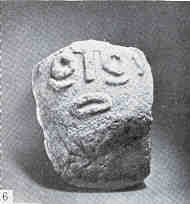

 |
Лепенски Вир, СФРЮ. Каменная скульптура из святилища XLIV. Первый монументальный "портрет". в истории изобразительного искусства. 52 x 33 см. Протонеолит. Первая половина VI тыс. |
ИСТОРИЯ ЕВРОПЫ
с древнейших времен до наших дней
(в восьми томах)
Том второй. Средневековая Европа
- Февраль-Апрель. Публикация коллективной монографии "История Европы с древнейших времен до наших дней", подготовленной Институтом всеобщей истории, Институтом истории СССР и Институтом славяноведения и балканистики Академии Наук СССР в восьми томах. В 2002 г. будет опубликован первый том - "Древняя Европа", описывающий исторического развитие Европы с древнейших времен до средневековья. Публикация электронных текстов первых томов осуществлялась совместными усилиями Создателей сайта и основателями сайта "ИСТОРИЯ РОССИИ" - Евгением Коробцовским и Андреем Раковским, где эти тексты впервые были опубликованы.
 Предисловие
к изданию
Предисловие
к изданию 
- Введение
(Е. С. Голубцова, Г. С. Кошеленко)
 Часть первая. ЕВРОПА В КАМЕННОМ И БРОНЗОВОМ ВЕКЕ
Часть первая. ЕВРОПА В КАМЕННОМ И БРОНЗОВОМ ВЕКЕ
- Глава I. Палеолит
и мезолит (В.С. Титов)
- КАМЕННЫЙ ВЕК
- БРОНЗОВЫЙ ВЕК
- Глава II. Неолит
и энеолит (В. С. Титов}
- Глава III. Европа В III
тыс. до н.э. (В. С. Титов)
- Глава IV. Древняя
Европа и индоевропейская проблема (Д. С.
Ваюн)
- Глава V. Европа
во II тыс. до н.э. (Д. С. Титов)
- Иллюстрации
к I части
- Заключение.
Роль античного наследия в европейской
культуре (Е. М. Штаерман).
- Литература
- Сокращения
- Хронологическая
таблица
и опубликована на сайте "ИСТОРИЯ РОССИИ" - http://www.tuad.nsk.ru/~history.
Подготовка электронного текста книги завершена в апреле 2002 г.